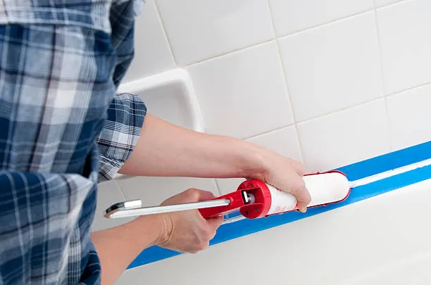
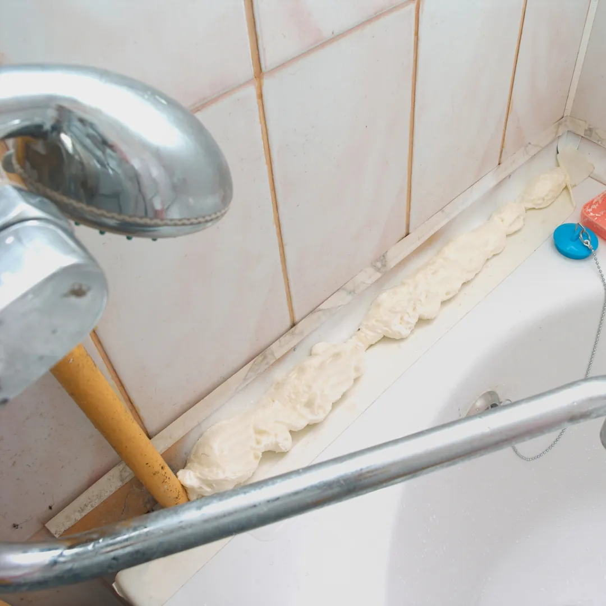
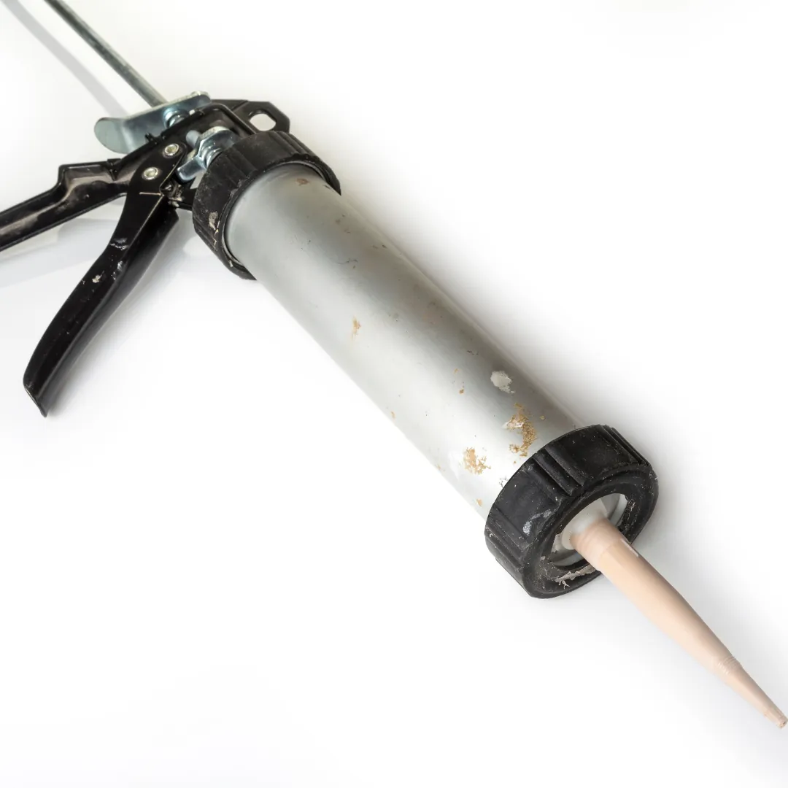

Bien que vous ayez eu tous les conseils pour rendre votre douche étanche avec du SPEC et du SEL dans nos précédents articles, une douche bien étanche ne veut pas dire que l’eau ne peut pas s’infiltrer dans les joints.
Nous nous concentrerons dans cet article sur les joints en silicone, qui sont l’interface entre vos équipements sanitaires (comme votre douche ou votre lavabo) et la faïence.
Vous remarquez que les joints autour de votre baignoire ou de votre lavabo noircissent et se décollent ? C’est qu’ils sont arrivés en fin de vie et qu’il est temps de les changer.
Aujourd’hui, nous allons vous expliquer quels sont les signes qui montrent que vos joints sont à changer et comment y procéder.

Les indicateurs
Lorsque vous remarquez que vos joints noircissent ou se décollent dans votre salle de bain, cela veut dire qu’il est temps de les changer.
Les joints silicones préservent l’étanchéité des revêtements de votre salle de bain. Il faut inspecter régulièrement ceux-ci afin d’identifier le moment idéal pour les remplacer.
Nous vous conseillons également de refaire les joints lorsque vous avez eu un problème d’étanchéité avec votre douche ou votre baignoire.
Remplacer les joints de votre salle de bain régulièrement, même sans signes d'usure, empêche également tout risque de maladies respiratoires. En effet, un joint usé peut entraîner la formation de moisissure causant des problèmes de santé sur le long terme.
La durée de vie moyenne des joints en silicone est de 3 ans. Alors, lorsque celle-ci est atteinte, même si vous ne voyez pas de traces de moisissures ou d’usure apparente, nous vous conseillons de les remplacer.
Comment refaire les joints ?
Afin de refaire vos joints, voici ce dont vous aurez besoin :
- Une paire de gants
- Un cutter
- Une éponge
- Du vinaigre blanc
- Un pistolet extrudeur
- Une cartouche de silicone
Pour commencer, vous allez retirer les joints. Après avoir mis vos gants, positionnez la lame de votre cutter contre le mur au niveau des joints. Tout en avançant, vous enlèverez le joint usé en le tirant avec l’autre main.
Quand cette étape est faite, s’il reste de la matière, frottez la surface avec une éponge imbibé de vinaigre blanc afin d’enlever le surplu.
Il ne vous reste plus qu’à nettoyer votre salle de bain avec du savon et attendre que ça sèche avant de passer à la pose des nouveaux joints.
Quand tout est sec, vous pouvez passer à la pose des nouveaux joints.
Pour cela, munissez vous de votre pistolet extrudeur dans lequel vous avez mis votre cartouche de silicone.
Le travail commence : trouvez la position la plus confortable afin d’appliquer le silicone d’une traite.
Après cela, passez votre doigt humidifié dans l’eau savonneuse sur le joint afin de le lisser.
Vous laissez sécher vos joints pendant 24 heures minimum et le tour est joué.
Rien de plus simple pour avoir une salle de bain saine et étanche.
Pour entretenir la couleur de vos nouveaux joints, nous vous proposons une solution simple, dont vous avez déjà entendu parler dans plusieurs de nos articles : le vinaigre blanc et le bicarbonate de soude. Après avoir nettoyé vos joints avec cette solution, vous les rincez et ils seront comme neufs !

Conclusion
Maintenant, vous savez tout. Il est impératif d’entretenir ses installations sanitaires afin d’éviter la moisissure et des problèmes d’étanchéité. En effet, tous les 3 ans, avec ou sans traces d’usure, vous devrez changer vos joints en silicone.
Bien entendu, même si cette tâche n’est pas très compliqué à réaliser, les artisans de Plateo restent à votre disposition pour refaire les joints de votre salle de bain.
Et oui, Plateo s’occupe également des petits travaux : Faites votre demande de devis en ligne gratuitement, et un professionnel s’occupera de vos travaux.